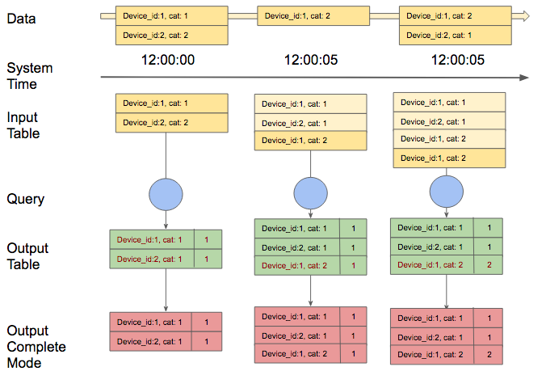

Spark Structured Streaming
Dans ce blogpost, nous allons développer notre étude autour d’un moteur de traitement streaming récent: Spark Structured Streaming.
Scalable, tolérant aux pannes, à l’instar de Spark streaming, il se base sur le moteur Spark SQL et permet ainsi la construction plus simple d’applications.
Principe de fonctionnement
Concrètement, structured streaming permet à l'utilisateur de traiter la donnée comme s'il s'agissait d'une table qui se remplissait perpétuellement: chaque nouvelle occurence dans le stream pourrait se traduire par l'ajout d'une nouvelle ligne dans la table.
Spark permet ainsi de traiter des flux de données en utilisant la même API que pour les traitements batch.
Cette table d'entrée peut ensuite être transformée par une requête qui s'exécute de manière incrémentale pour calculer une table de résultats :
- L'utilisateur défini un déclencheur (trigger) qui déterminera l'intervalle de temps de mise à jour de la table de résultats.
- Lorsque la table de résultats est mise à jour, ces derniers sont persistés sur un stockage externe (écriture de fichiers parquets, sauvegarde dans une base cassandra...).
La manière de persister les données est définie pour un "output mode" qui peut prendre les valeurs suivantes :
- Append: seules les nouvelles lignes apparaissant dans notre output table depuis le dernier trigger s'écriront dans le stockage.
- Complete: l'ensemble de l'output table sera écrit : c'est le mode que nous utiliserons pour ce démonstrateur
- Update: seules les lignes modifiées dans notre output table depuis le dernier trigger, seront écrites. (Non disponible en spark 2.1)
Exemple de comptage des devices par categories de notre simulateur IOT avec le mode Complete :

Atouts et spécificités du modèle Structured Streaming
Outre la possibilité de travailler sur des flux de données de manière équivalente à ce qui se fait en mode batch, spark structured streaming dispose également de caractéristiques très intéressantes :
- La gestion d'un Event-Time : chaque évènement inséré dans la table d'entrée est accompagné d'une colonne supplémentaire "event-time" qui permet la prise en compte des fenêtres de temps
- La gestion du retard de la donnée : la table de sortie étant mise à jour de manière incrémentale, une donnée arrivant en "décalage" sera bien prise en compte
- La prise en compte de la tolérance aux pannes (exactly-once fault tolerance) : un mécanisme de checkpoint est utilisé pour enregistrer les métadonnées correspondant aux données traitées
Structured Spark Streaming dans Boontadata:
Cette série de blogposts visant à comparer différents framework de traitement de données en streaming, le cadre général d'étude reste le même :
- une source de donnée streaming dans un composant Kafka
- le traitement des données avec un framework de traitement de données streaming : ici Spark Structured Streaming (il faut noter que Spark Structured Streaming est toujours en phase “Alpha” de développement, tout comme les API permettant son utilisation.)
- les résultats enregistrés dans une base Cassandra pour analyse
De manière plus détaillée, la plateforme générique boontadata est constituée des éléments suivants :
- Simulateur IOT permettant de créer des flux de messages
- Système de messagerie distribué Kafka basé sur le principe du "publisher" / "Subscriber"
- Base de donnée Cassandra pour le stockage des données et résultats
- Service de traitement des flux : Spark Streaming dans le cas de ce blog post
- Module de comparaison pour évaluer l'impact et la performance du module de traitement
Tous les éléments de la plateforme boontada sont créés dans des containers distincts de manière à apporter un maximum de flexibilité.
Afin de connaître la procédure d’installation, n’hésitez pas à aller sur le lien suivant.
Ayant déjà traité le fonctionnement de notre environnement et architecture boontadata dans les blogs précédents (voir l'article spark streaming dans la série boontadata), nous détaillerons ici le code correspondant au nouveau scénario Spark structured Streaming.
Code:
Pour Spark Structured Streaming, le code est écrit en scala (SStreamingJob.scala). Les principaux éléments du code sont les suivants :
SparkSession et récupération des messages Kafka
- Définition d'une configuration "sparkConf" prenant en compte le nom de notre application et la connexion à la base de données Cassadandra
- Lecture en streaming des messages provenant des brokers Kafka. On y renseigne l'adresse des brokers, le topic, le type de lecture, ici "latest", permettant de récupérer les dernier messages du topic
Création du dataset
<<<<<<< HEAD
- On récupère ensuite les champs "value" et "timestamp" des messages (que l'on caste au format String).
On définit une colonne "cols", liste des éléments que l'on veut récupérer de "value".
On réalise ensuite un dataset, issu de la séparation par "|" de chaque ligne.
=======
- Extraction des informations du message : définition des colonnes formant le dataset
- Application de la logique business : somme des mesures sur la fenêtre de temps
Il faut noter que la déduplication des messages n'est pas réalisée en raison d'une limitation du moteur spark structured streaming.
En effet, à l'heure actuelle, il n'est pas possible de réaliser plus d'une agrégation dans les traitements.
Pour palier à ce problème, il aurait fallu envoyer le résultat de la déduplication dans un nouveau topic kafka puis traiter ce nouveau message pour faire la somme des mesures de l'IOT.
Application de la requête et enregistrement des données
- Requête : chaque ligne de la table de résultats va être insérée dans Cassandra
- Ecriture dans Cassandra : utilisation du Foreach writer
L'output mode a été fixé en "complete" : seul mode adapté dans notre cas (le mode append ne peut être utilisé car les lignes agrégées doivent être modifiées au fur et à mesure de l'arrivée des messages et le mode update n'est pas disponible). Ce mode pourrait poser des problèmes de performances si la taille de la table de sortie devient trop importante.
>>>>>>> draft-flink
Il pourrait être intéressant de compléter l'étude en faisant varier l'intervalle de déclenchement du trigger. Par défaut, le trigger se déclenche dès que les traitements sont terminés mais l'on peut spécifier une valeur de temps :
// Exemple de déclenchement du trigger toutes les 10 secondes
ds.writeStream.queryName("aggregateStructuredStream")
.trigger(ProcessingTime("10 seconds"))
.outputMode("complete")
.foreach(writer).start
Résultats
L'analyse des résultats permet de comparer les valeurs d'agrégation (sur la fenêtre de temps de 5s) réalisées en début de workflow par le simulateur IOT avec celles calculées par le moteur Spark Structured Streaming (sur la base de l'event time)
Exemple de résultats :
Comparing ingest device and downstream for m1_sum
--------------------------------------------------
26 exceptions out of 26
()
Exceptions are:
Ces résultats mettent en évidence les faiblesses actuelles du moteur spark structured streaming.
En effet, l'impossibilité de réaliser plusieurs agrégations dans un même traitement et la non disponibilité du mode output "update" sont des éléments qui attestent de la jeunesse de ce moteur.
Écrit par
Gilles ESSOKI
le 2017-04-25